Rapid evolution of selfing syndrome in plants studied with
resurrection ecology
Overview
The resurrection method is a new ecological approach for the study
of rapid adaptation in natural populations. A basic resurrection
study is a common garden experiment where ancestral genotypes
(preserved as seeds in natural seed banks or seed repositories) are
grown side-by-side with their descendant genotypes (sampled in the
same site at present). This setting allows for instant comparison
between ancestral and descendant genotypes. If phenotypic trait
shifts are detected between ancestors and descendants, they can be
interpreted as the outcome of rapid evolution.
The resurrection method opens the possibility for the study of rapid
evolution in arable weeds, which are exposed to new, intense
selective pressures with the development of modern agriculture and
global change. In particular, pollinator decline, coupled with
phenological mismatches in flowering time due to temperature
fluctuations, could lead towards increased self-pollination and a
decreased attractivity of plants to pollinators (selfing syndrome).
Alternatively, arable weeds could evolve towards increasing their
attractivity to pollinators, thus maintaining pollinator
interactions despite the reduction in pollination services.
Empirical observation of contemporary evolution in arable weeds has
produced data in line with both hypotheses, and it is likely that
the direction of trait changes is species- and even
population-specific.
I used the resurrection method with two self-compatible,
insect-pollinated, annual, arable weeds (Matthiola tricuspidata and
Centaurium erythraea) to investigate the effects of climate change
and pollinator decline on the evolution of their reproductive and
pollination strategies. An innovative aspect I implemented is the
upgrade of the basic resurrection common garden with other
approaches from evolutionary ecology – reciprocal transplant in
simulated environments, genomic tools, and ecological epigenetics.
Are observed trait shifts in Matthiola tricuspidata compatible with
adaptation to climate change and pollinator decline? A reciprocal
“transplant in time” experiment
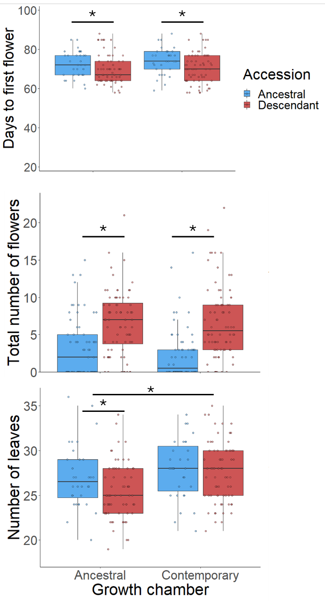
Figure 1. Results of a reciprocal "transplant in time"
resurrection experiment using ancestral and descendant genotypes
from a natural population of Matthiola tricuspidata sampled 24
year apart.
While common garden resurrection experiments can tell us about
phenotypic trait shifts between ancestors and descendants, they
cannot directly test whether these shifts are adaptive. I tested
the adaptive character of observed phenotypic shifts between
ancestors and descendants in the Mediterranean annual, Matthiola
tricuspidata, using reciprocal “transplants in time”. To do this,
ancestral and descendant genotypes of one natural population were
grown in simulated past and present-day environmental conditions
in regulated growth chambers. Past conditions were characterized
by lower temperature, higher precipitation levels and humidity
compared to present-day conditions. In both experimental
environments, ancestral and descendant genotypes were
significantly different from one another. In both growth chambers,
descendants flowered earlier (consistent with adaptation to warmer
springs, Figure 1 top), had larger daily floral displays
(consistent with adaptation to maintain pollinator interactions
via increase attractivity, Figure 1 middle). Plant size was
measured as a fitness proxy, showing overall larger plants in the
present-day, warmer and drier environment. Ancestors were larger
than descendants in the past environment, but no significant
differences between ancestors and descendants, suggesting that
both ancestral and descendant genotypes are capable of increasing
their vegetative growth in warmer and drier environments (Figure 1
bottom).
Adaptation of Centraurium erythraea to pollinator decline and
climate change revealed by the resurrection method
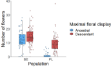
Figure 2. Maximal floral display for ancestral and descendant
genotypes in two populations (BE - Belgium, and PL - Poland)
harvested 17-24 years apart
Ancestral and descendant seeds from two natural populations of C.
erythraea – one from Belgium (ancestors and descendants sampled 24
years apart) and one from Poland (sampled 17 years apart) were
grown in a common garden, and phenotypic and genetic diversity was
compared to disentangle the effects of random from those of
selective evolution.
In both populations, the descendants had larger daily floral
displays (Figure 2) and larger petals (Figure 3), whereas the
anther-stigma distance remained unchanged (Figure 4). Altogether,
the observations show an evolution to increased flower
attractiveness that could maintain plant-pollinator interactions.
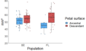
Figure 3. Petal surface of ancestral and descendant genotypes
in two populations (BE - Belgium, and PL - Poland) harvested
17-24 years apart
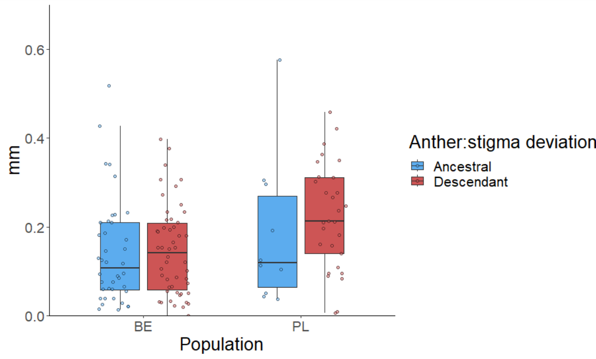
Figure 4. Estimates of herkogamy (anther:stigma deviation) of
ancestral and descendant genotypes in two populations (BE -
Belgium, and PL - Poland) harvested 17-24 years apart
Pairwise Fst estimates showed low differentiation between
ancestors and descendants in Belgium (0.077), and high
differentiation in Poland (0.292). This suggests the occurrence of
major evolutionary or demographic changes in the Polish population
since the sampling of ancestral genotypes (e.g. migration,
extinction and recolonization) or possible high sampling bias in
the past. This result illustrates a shortcoming of resurrection
studies that is often acknowledged but rarely accounted for – with
only two temporal points in a single population, it is difficult
to disentangle the effects of natural selection from stochastic
variation in allelic frequencies due to random evolutionary
processes or sampling bias. As returning in the past to resample
the population is not an option, testing for different
evolutionary scenarios using approximate Bayesian computations
(ABC) could bring insight into the population evolutionary
history. This nevertheless requires genotyping neighboring
populations to be able to infer the probability that Poland the
sampled descendant genotypes are direct offspring of the genotypes
present in 2003, or were introduced from another population in its
vicinity.
Disentangling genetic from hereditary epigenetic variation in the
rapid adaptation of Centaurium erythrae. Combining the resurrection
method with ecological epigenetics
This ongoing pilot introduces ecological epigenetics within the
existing framework of resurrection ecology, for a novel approach of
the study of rapid plant adaptation to global change and pollinator
decline via transgenerational plasticity. Indeed, it has been shown
that transgenerational plasticity can persist in plants for multiple
generations, mediated via hereditary epigenetic modifications such
as DNA methylation.
To test for potential effects of transgenerational plasticity
mediated by hereditary epigenetic variation, I cultivated F1
descendants of the same two populations of C. erythraea as above in
a common garden. Half of the plants were subjected to a
demethylation treatment by spraying a solution of 5-azacitidine,
which should indiscriminately reduce methylation levels in all
treated plants. If phenotypic trait shifts are due to hereditary
epigenetic differences, I expect the phenotypic differences between
ancestors and descendants to be reduced or even cancelled out in the
demethylation compared to the control treatment. If the differences
between ancestors and descendants are mainly governed by genetic
variation, then the demethylation treatment should not have an
effect on the overall differences between ancestors and descendants
(Figure 5). The study will investigate shifts in life history traits
for the entire lifecycle of C. eythraea from juvenile growth rates,
through leaf economic spectra, flowering phenology, to plant
attractivity and fitness.
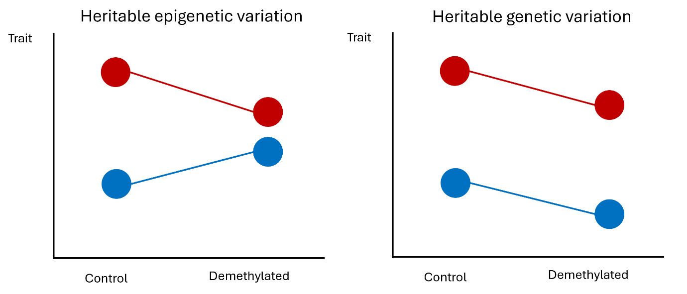
Figure 5. Possible outcomes of an ecological epigenetic assay
combined with the resurrection method
LIFE for Minuartia
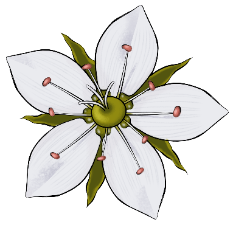
Minuartia smejkalii is an edaphic perennial plant endemic
to the Czech Republic. The species’ already restricted habitat to
serpentine soils in two natural reserves south of Prague was further
fragmented and degraded by anthropogenic actions since the 1960s.
The LIFE for Minuartia project’s main goal was to reinforce extant
and restore extinct populations of M. smejkalii via habitat
restoration, population demographic and genetic reinforcement from
appropriate in situ and ex situ cultivated materials.
I was in charge of the conservation genetics aspect of LIFE for
Minuartia which included
assessing genetic variation and its distribution estimated from
anonymous RADSeq markers among populations, regions, as well as
among all Minuartia species present in the Czech Republic.
study the occurrence of inbreeding depression, outbreeding
depression and heterosis by comparing the fitness of inbred and
outbred offspring produced from controlled pollinations and
cultivated under different conditions.
The results showed that M. smejkalii is genetically differentiated
from other Minuartia taxa present in the Czech Republic.
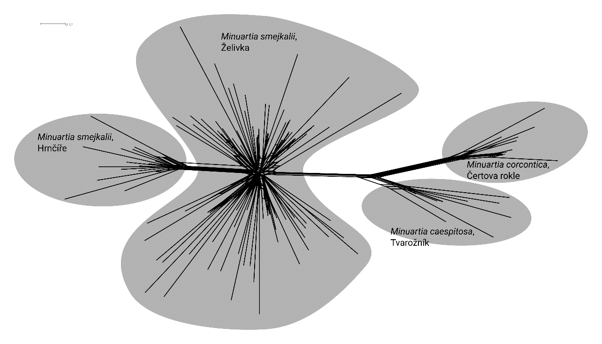
Figure 1 . Splits Tree analyses of
Minuartia smejkalii collected in the only two extant
locations of the species (Zelivka and Hrnicre), and the other two
Minuartia species known to the Czech Republic (M. concortica and
M. caespitosa)
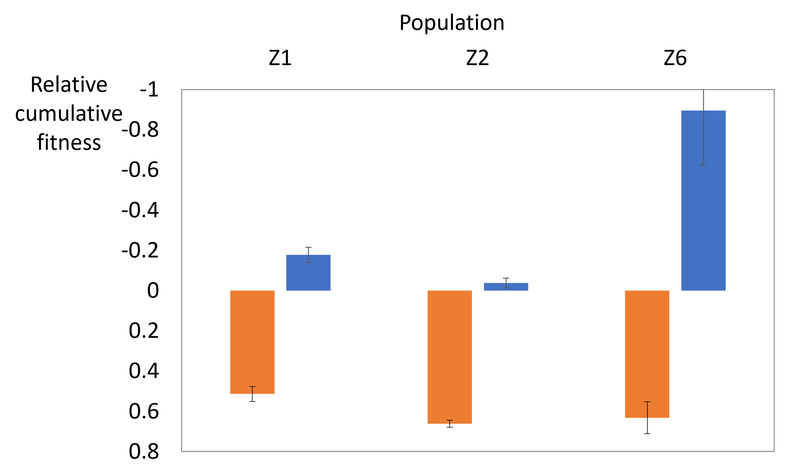
Figure 2. Estimates of inbreeding depression (in orange) and
outbreeding depression (in blue) for three populations of
Minuartia smejkalii. Note the inversed y-axis. Large
absolute values mean large inbreeding depression or heterosis,
regardless of the sign. Inbreeding depression in particularly
high in population Z6, which is an order of magnitude smaller
than populations Z1 and Z2.
Moreover, intrapopulation genetic variation was high and
inter-region variation was low, which could suggest gene flow
between regions, or, more plausibly, a genetic lag due to the
longevity of the species. Although the estimates varied between
traits and environments, I detected high inbreeding depression in
large populations, high heterosis in small populations, and low to
no outbreeding depression. Altogether, these results offer an
optimistic perspective for the conservation of the species which
still presents significant genetic diversity and heterosis that
can be used to introduce genotypes that will increase the adaptive
potential of extant populations with minimal risk of breaking down
adaptive complexes.
Host race evolution in Phelipanche ramosa
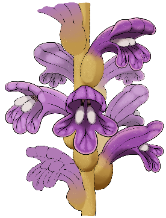
Weedy parasites invade crops often with dire consequences for yield.
The devastating effects of weedy parasites are aided by modern
agriculture, notably the reduced genetic resources of monoculture
crop resistance which are regularly circumvented by the parasite,
and the inability to discriminate between crops and weedy parasites
for mass eradications. Phelipanche ramosa is a weedy parasite with a
broad geographic distribution that attacks a diverse range of
dicotyledonous crops. The species has been documented to regularly
invade new crops, and quickly overcome defense mechanisms of
resistant crop varieties. As a postdoc, I investigated the
distribution of genetic diversity and host preference of P. ramosa
across the Mediterranean basin with the goal to understand its
evolutionary history and identify factors that lead to the emergence
of new host races in western France.
To assess the distribution of different genotypes along geographic
and host plant gradients of P. ramosa I genotyped over 100
populations of P. ramosa harvested on various crops using SSR
markers. I then tested host preference in rhizotrons for a
representative core collection of 15 populations. I identified three
highly homozygous genetic groups with distinct host preferences and
life cycles. Type 1 had restricted distribution in western France
and adapted to canola as host by extending its life cycle, so it
matches the winter annual cycle of canola. This is the most recently
emerged host race, coinciding with the introduction of canola
cultures in western France in the 1980s. Type 2a was found mostly in
eastern France, with preference for hemp as main host. Type 2b had a
broad distribution, with overall good performance on all hosts, but
some preference for hosts of the Solanaceae family.
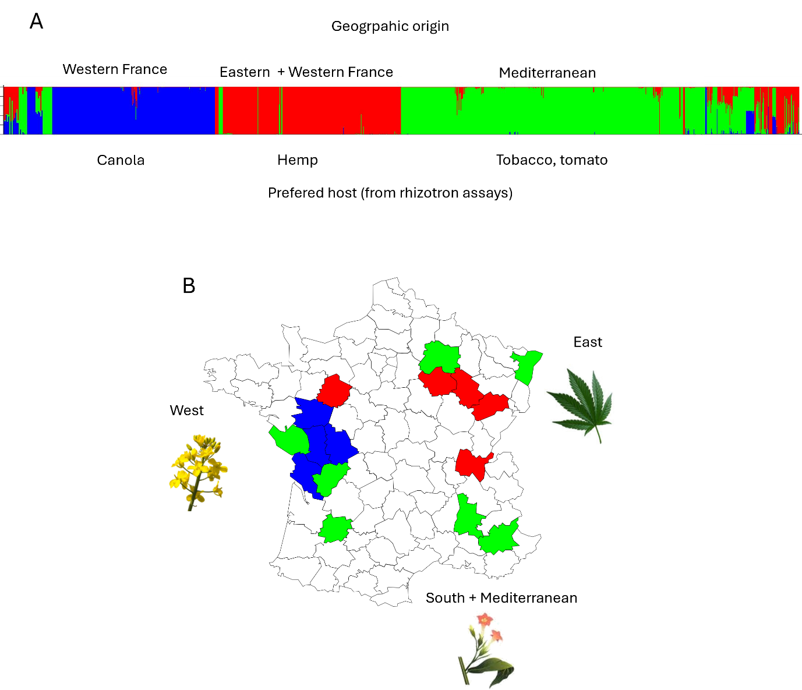
Figure 1 . A. Clustering analysis with STRUCTURE of over 100
populations of Phelipanche ramosa. Three clusters were identified
corresponding to three genetic groups with distinct geographic
origins and host race preference assessed in mini-rhizotron
assays. B. Distribution of the genetic diversity of P. ramosa in
France. Images correspond to the predominant natural host plant
for each French region
Looking for cowslips
Heterostylous plants such as Primula veris have two floral morphs
with different and reciprocate positions of the anther and stigma,
which facilitate pollen transfer between morphs, and hinder it
within morphs, thus favoring cross-pollination. Cross-pollination is
further favored by morph self-incompatibility. In a population at
equilibrium, isoplethy (equal frequencies of each morph) is
expected, because it maximises average fitness in the population.
Disturbance events, such as population fragmentation which can cause
stochastic morph frequency variation and thus limit the availability
for suitable mating partners in a population. Coupled with effects
of climate change that affect plants and pollinators alike,
deviations from isoplethy may thus impose an increased threat to
plants with complex mating systems, such as heterostyly.
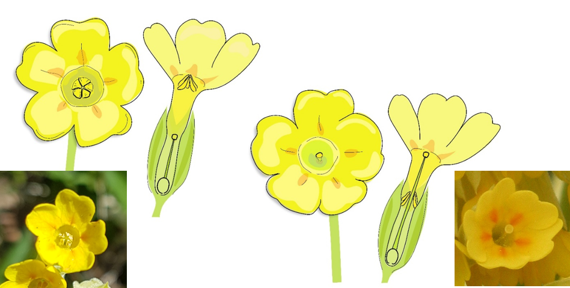
Figure 1. The two floral morphs of Primula veris. Left – S-morph
(short style, long stamens), right – L morph (long style, short
stamens.
The citizen science campaign Looking for Cowslips gathered data
about the distribution of floral morphs in P. veris. Between 2021
and 2022, the campaign gathered data on over 8000 locations across
Europe thanks to the contribution of local campaign managers
coordinated by the research team of T. Aavik at the University of
Tartu, Estonia. The results expectedly showed that deviation from
isoplethy is more pronounced in smaller populations that are more
susceptible to genetic drift. Surprisingly, the direction of the
deviation was not random, and populations with excess of the
short-styled morph prevailed across Europe. The deviation in favor
of the short-styled morph was more pronounced closer to urban areas,
and in populations with higher precipitation. These results open the
question about possible fitness advantage of the short styled morph
that would favor its distribution, but also about the relationship
between P. veris and its pollinators, especially in the context of
climate change that would modify precipitation patterns.
I was involved in the campaign as National Coordinator for North
Macedonia. All national coordinators were given a starting
communication package with social media posts, graphics, and press
releases that they could distribute through their own networks, and
were offered monthly group consultations with the PR expert of the
campaign. The local implementation of the campaign was left at their
discretion.
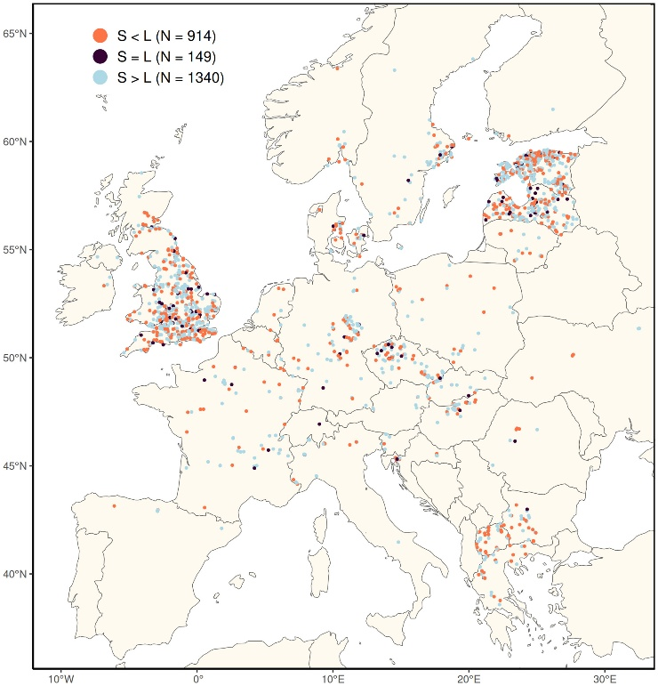
Figure 2. Distribution of cowslip observation from the Looking
for Cowslips campaign in 2021 and 2022. Note the high density of
observations in N. Macedonia (central part of the Balkan
peninsula).
As a national coordinator, I integrated the Looking for Cowslips
campaign in the Science for Children education platform. This
resulted in a twofold benefit – recruitment of participants was
facilitated by reaching out to the followers of the Science for
Children platform, and on the other hand, Looking for Cowslips
provided educational material (1, 2, 3, 4) about plant
reproduction and biodiversity conservation for Science for
Children. The 2022 campaign had an even broader span of
activities, organized in the scope of the “Spring of cowslips”
event. The outcome of this huge communication and education effort
was visible in the results of the campaign – North Macedonia,
being one of the smallest European countries with a population of
2 million, was among the top 10 contributors of the campaign
(Figure 1).